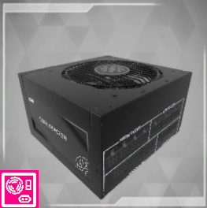
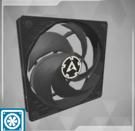

|
Home |
PC-Kompunenten |
Doku |
Quiz |

|

|

|

|

|

|

|

|
Was ist ein CaseFan / Gehäuse Lüfter Kühler?
Ein Gehäuselüfter (auch als Case Fan oder Gehäuseventilator bezeichnet) ist ein Lüfter, der in das Gehäuse eines Computers eingebaut wird, um die Luftzirkulation zu verbessern und die Kühlung von Komponenten innerhalb des Gehäuses zu unterstützen. Die Hauptfunktion eines Gehäuselüfters besteht darin, die warme Luft abzuführen und kühlere Luft in das Gehäuse zu ziehen, um die Betriebstemperatur der Komponenten wie CPU, GPU und Festplatten zu senken. Hier sind einige gängige Arten von Gehäuselüftern:
Axial lüfter (Case Fan):
Der häufigste Typ von Gehäuselüfter. Erzeugt einen Luftstrom entlang der Achse des Lüfters. In verschiedenen Größen erhältlich, wie 80 mm, 120 mm oder 140 mm. Eignet sich für die allgemeine Belüftung des Gehäuses.
Radial lüfter (Blower Fan):
Erzeugt einen gerichteten Luftstrom, der parallel zur Lüfterachse verläuft. In der Regel kleiner und kompakter als Axiallüfter. Geeignet für Gehäuse mit begrenztem Platz, wie in kleinen Formfaktor-PCs.
RGB-Lüfter:
Ähnlich wie Axiallüfter, jedoch mit RGB-LEDs für eine anpassbare Beleuchtung. Bietet ästhetische Optionen für Gehäuse mit Fenstern oder transparenten Seitenwänden.
High-Performance-Lüfter:
Entwickelt, um einen höheren Luftdurchsatz oder einen höheren statischen Druck zu erreichen. Geeignet für Systeme mit anspruchsvoller Kühlung, wie Gaming-PCs oder leistungsstarke Workstations.
Slim-Lüfter:
Dünne Lüfter mit geringerer Bauhöhe. Ideal für Gehäuse mit begrenztem Platz, wie HTPC-Gehäuse oder flache Desktop-PCs.
PWM-Lüfter:
Verwendet Pulsweitenmodulation (PWM) zur Steuerung der Lüftergeschwindigkeit. Ermöglicht eine präzise Regelung der Lüftergeschwindigkeit basierend auf der Temperatur des Systems.
Die Installation von Gehäuselüftern hängt von der Gehäusegröße, dem Layout und den spezifischen Anforderungen des Systems ab. Eine effektive Gehäusebelüftung ist wichtig, um die Komponenten kühl zu halten und die Gesamtleistung und Lebensdauer des Computers zu verbessern. Es ist üblich, mehrere Gehäuselüfter zu verwenden, um einen optimalen Luftstrom zu gewährleisten.